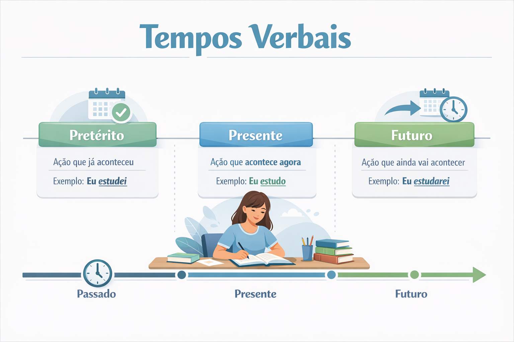

Tempos Verbais: o que são, tipos, exemplos e como usar corretamente
Os tempos verbais são responsáveis por indicar quando uma ação acontece: no passado, no presente ou no futuro. Eles são fundamentais para a construção de frases claras e coerentes, sendo um dos pilares da gramática da língua portuguesa.